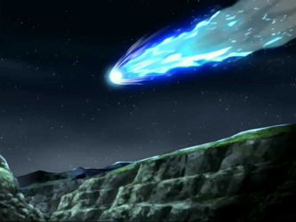

Habilidade de fogo
Dispara bolas de fogo pelas mãos

Zuko is a person of animaton named Avatar - the last airbender.
Dispara bolas de fogo pelas mãos
Dispara fogo pela boca

Lança linhas de fumaça que permitem escapar dos inimigos

Um meteoro aparece nos céus! Os dobradores de fogo se tornam mais forte
Contato: